<mat-toolbar color="primary">
  
  <p>Andrea Maccan</p>

  <div class="social">
    <a href="https://ar.linkedin.com/in/acmaccan" target="_blank">
      
    </a>

    <a href="https://github.com/acmaccan" target="_blank">
      
    </a>

    <a href="https://gitlab.com/amaccan" target="_blank">
      
    </a>

    <a href="https://stackblitz.com/@acmaccan" target="_blank">
      
    </a>
  </div>

  <button mat-button color="primary" mat-raised-button (click)="logout()">
    Logout
  </button>
</mat-toolbar>
